Maharshtra
- Home
- Food
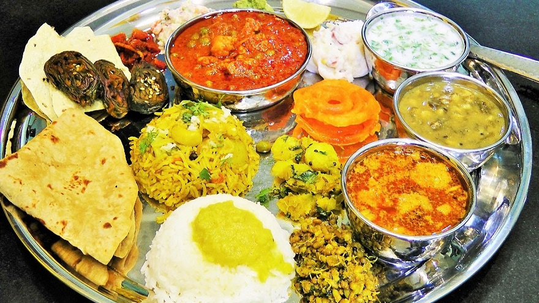
- Fashion
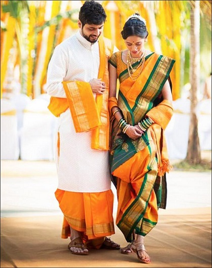 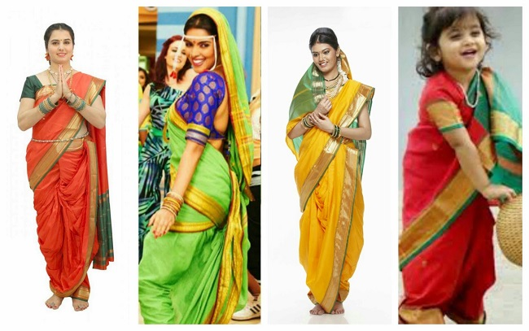 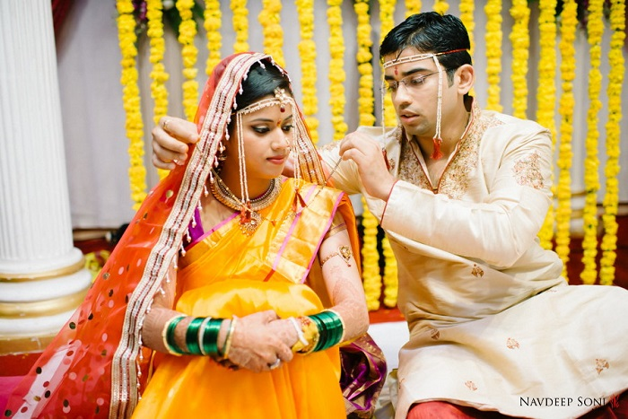 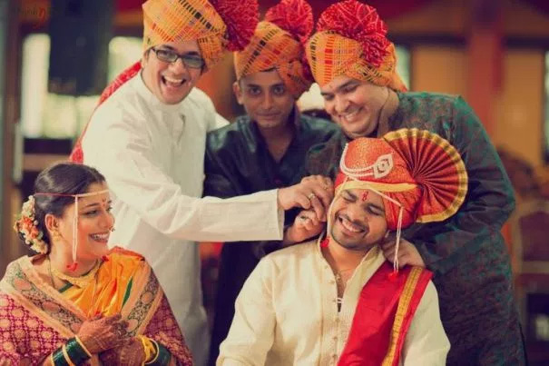 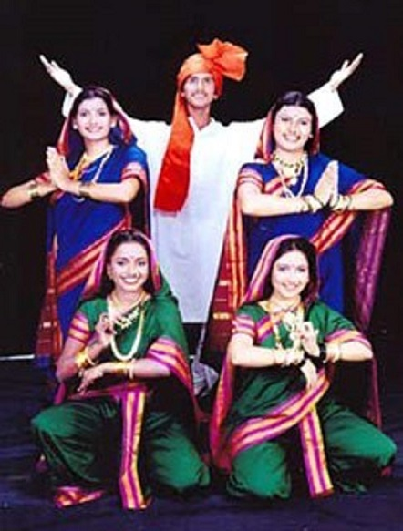
- Festival
- Gudhi Padwa
- Ganesh Chathurthi
- Pola
- Kojagiri Purnima
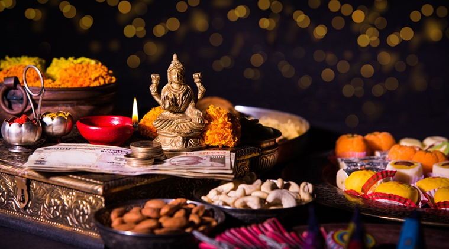
Kojagiri Purnima
Kojagiri Poornima or Ashwin Poornima is celebrated on the full moon day of Ashwin to mark the passing of the rainy season and the advent of the harvest season. The sky becomes clear and the moon shines in the sky with full brightness. Some believe that Goddess Laxmi shows up at different places at night so people stay awake playing games, dancing, singing and in general merry-making. These celebrations are usually marked by community dinners comprising of simple but delicious snacks like cool milk and rice snacks.
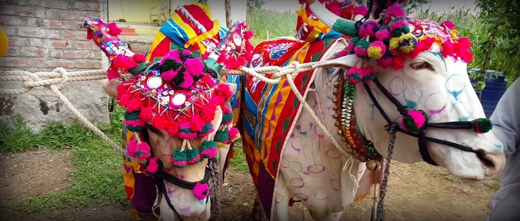Pola
Like Lohri in North India, the harvest festival of Pola is celebrated by farmers all over Maharashtra.It falls on Pithori Amavasya, the new moon day of the holy month of Shravan. On this day bullocks, which are an integral part of the agriculture – basically the backbone of it – are worshiped. - Kojagiri Purnima
 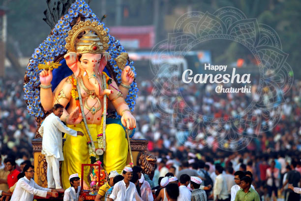
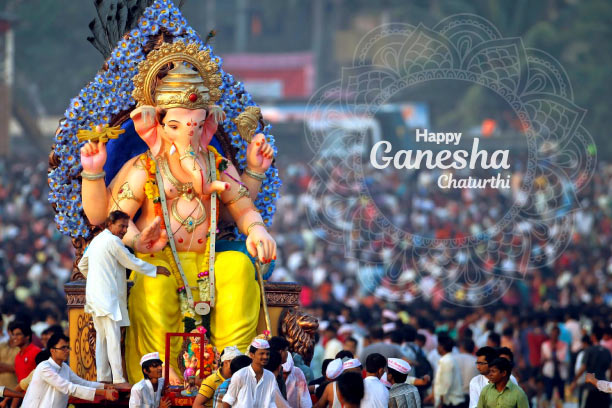
Ganesh Chathurthi
Lord Ganesha, the deity of wisdom, is the most loved in Maharashtra and Ganesh Chaturthi is celebrated with the most grandeur. In August, preparations for the auspicious day when Lord Ganesh was born – begin with great enthusiasm. It is an 11-day festival, beginning with the installation of beautifully sculpted Ganesh idols in homes and large pandals, colorfully decorated, depicting religious and cultural themes. - Pola
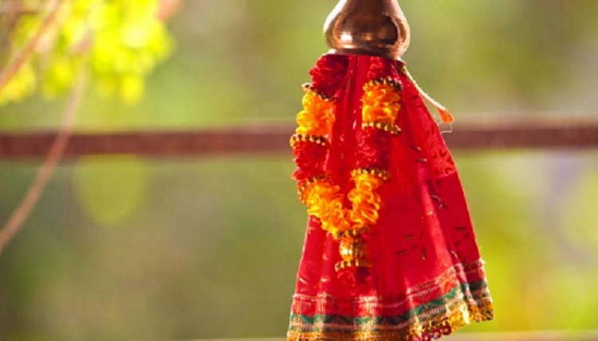Gudhi Padwa
Gudhi Padwa signifies the beginning of a prosperous new year and Hindus consider it to be one of the most auspicious days. It falls on the first day of the Lunar calendar, marking the new year. It is celebrated with great pomp and show all over the state. Households are decorated with garlands and rangolis, and a gudhi is put up outside the home to welcome prosperity and good health in to the family. Gudhi is a symbol of victory, characterized by a bamboo stick with silk cloth. It is garlanded with flowers and has sweets offered to it. - Ganesh Chathurthi
- Gudhi Padwa